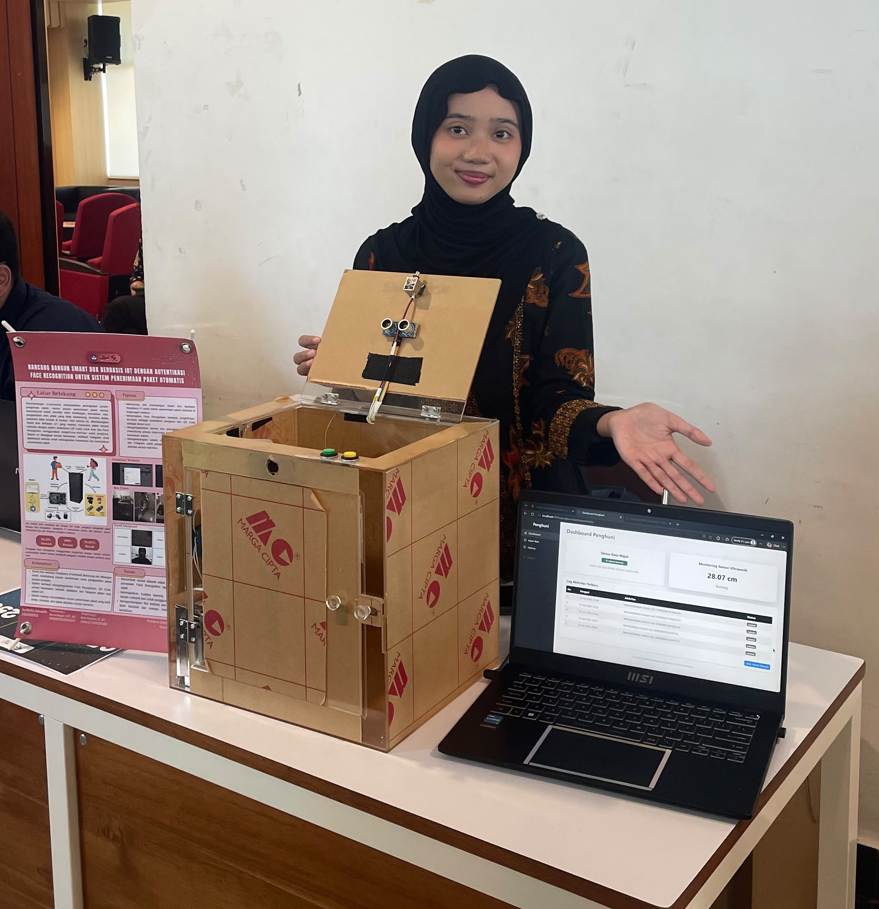
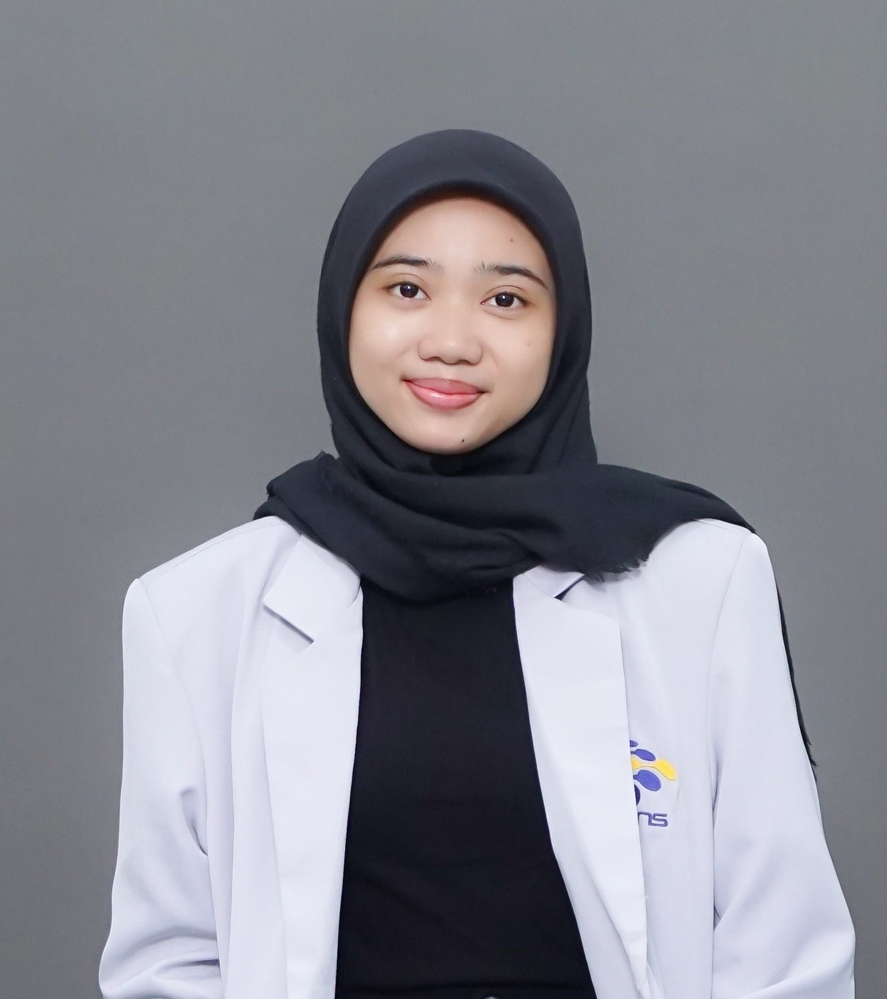
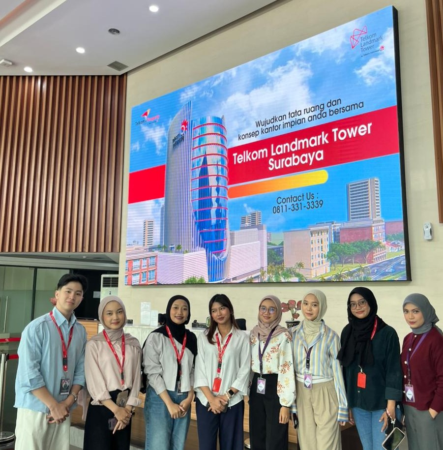

01 · TUGAS AKHIR
Smart Box Berbasis IoT
Sistem penerimaan paket otomatis dengan autentikasi face recognition, Raspberry Pi, sensor, dan monitoring berbasis web.
Lihat selengkapnya →TEKNOLOGI REKAYASA INTERNET
Halo, saya Ika Shafira Salwadilla, fresh graduate D4 Teknologi Rekayasa Internet dari Politeknik Elektronika Negeri Surabaya yang memiliki pengalaman dalam pengembangan aplikasi web.

01
TENTANG SAYA

Saya merupakan fresh graduate D4 Teknologi Rekayasa Internet dari Politeknik Elektronika Negeri Surabaya dengan IPK 3,65/4,00. Selama kuliah, saya mempelajari pemrograman, pengembangan aplikasi berbasis web, database, jaringan komputer, serta Internet of Things (IoT).
Saya memiliki pengalaman satu tahun sebagai Web Developer Intern di PT Telkomsel Branch Surabaya. Selama magang, saya terlibat dalam pengembangan dan pemeliharaan website dan aplikasi, termasuk pengembangan fitur, pengelolaan database, pengujian, dan perbaikan kendala pada aplikasi.
Selain pengembangan web, saya juga memiliki pengalaman mengembangkan Smart Box berbasis IoT sebagai Tugas Akhir. Saya senang mempelajari hal baru, bekerja dalam tim, dan terus mengembangkan kemampuan dalam membangun aplikasi yang dapat digunakan dalam kebutuhan nyata.
02
KEAHLIAN
Teknologi yang saya gunakan selama kuliah, project, dan pengalaman magang.
03
PENGALAMAN MAGANG
Januari 2025 - November 2025
PT Telkomsel · Branch Surabaya
Mengikuti program InLife Internship selama dua periode dengan total satu tahun, dengan terlibat dalam pengembangan dan maintenance website serta aplikasi untuk kebutuhan internal maupun bisnis.
04
PROYEK

01 · TUGAS AKHIR
Sistem penerimaan paket otomatis dengan autentikasi face recognition, Raspberry Pi, sensor, dan monitoring berbasis web.
Lihat selengkapnya →
02 · PENGALAMAN MAGANG
Pengembangan dan maintenance beberapa website dan aplikasi untuk mendukung kebutuhan internal maupun bisnis.
Lihat selengkapnya →03 · PROJECT PRIBADI
Sistem antrean berbasis web yang memungkinkan pasien memantau antrean dan petugas mengelola pemanggilan serta recall nomor antrean.
Lihat selengkapnya →05
PENDIDIKAN
2022 — 2026
POLITEKNIK ELEKTRONIKA NEGERI SURABAYA
IPK 3.65 / 4.00
FINAL PROJECT
06
SERTIFIKASI & PENCAPAIAN
SERTIFIKASI BAHASA
PENS Language and Culture Center
2026 — 2028 Lihat sertifikat →PENCAPAIAN
Design and Implementation of an IoT-Based Smart Box with Face Recognition Authentication for an Automated Package Receiving System
2026 Lihat bukti → Lihat paper →07
ORGANISASI & KEGIATAN
LMB PENS
Berproses dari Staff Muda hingga Kepala Departemen Eksternal dalam pengelolaan kegiatan, koordinasi UKM, serta hubungan dengan pihak kampus dan eksternal.
Lihat kegiatan →KEPANITIAAN & KEGIATAN
PELATIHAN
Latihan Keterampilan Manajemen Mahasiswa
2022 Lihat sertifikat →PELATIHAN
Latihan Keterampilan Manajemen Mahasiswa
202308
KONTAK
Siap memulai karier di bidang teknologi, mengembangkan kemampuan, dan memberikan kontribusi melalui keterampilan yang saya miliki.